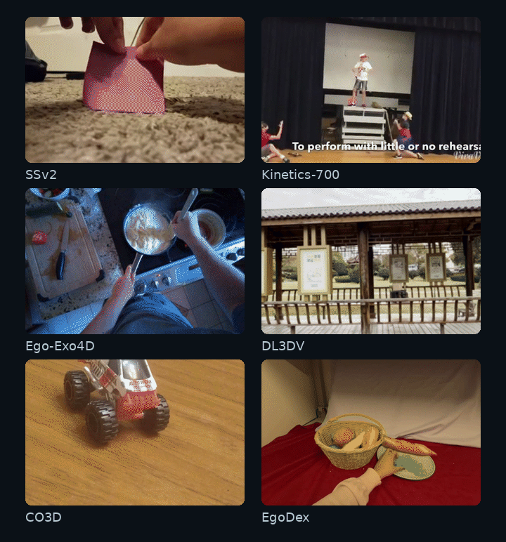
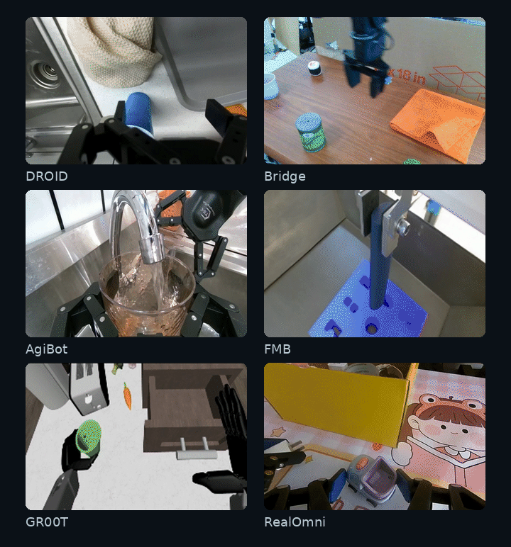
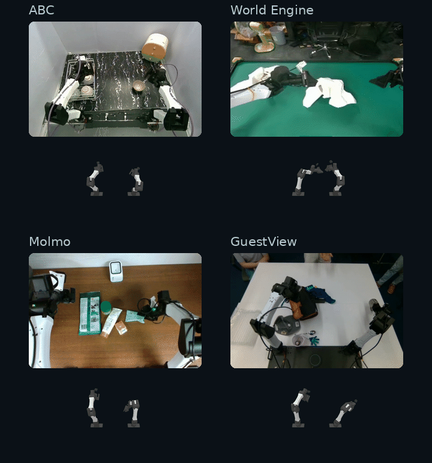

Humans can imagine different courses of action, anticipate their consequences, and choose how to act to achieve their goals. Robots with general intelligence need to answer the same questions: What should I do next? What will happen if I do it? Am I making progress towards my goal?
Robotic systems often split these capabilities across separate models. PsiBorg brings them together as prompts to a single model, trained continuously on diverse visuomotor data. Building on Probabilistic Structure Integration (PSI), it predicts observations and actions as tokens, with each capability defined by what the prompt asks it to fill in.
Converting Capabilities Into Prompts
Choose robot and general-video examples for the optical-flow pilot ↗ · Live generation results ↗
Can the model imagine the consequences of its own actions? Below, we show simulation results for a set of held-out teleoperated episodes. We see that the model successfully simulates picking up and dropping off objects, and can simulate counterfactual scenarios.
Recorded expert joint commands replayed in MuJoCo alongside action-conditioned RGB predictions. Both views advance in 400 ms steps.
Loading simulation…
We observe striking generalization to new visual goals and objects. We also find that predicting time to goal first, and adding this temporal embedding to the goal image greatly improves action prediction compared with providing just the goal image, where the model may be forced into pixel matching. This visual goal conditioning can be thought of as a form of in-context learning from human demonstrations, where the demonstration is a goal image instead of a video.
Given a current observation and a goal image, PsiBorg predicts Δt: the estimated time remaining to reach the goal. These predictions track progress as the robot acts and update when it receives a new goal.
Can the model distinguish reaching a goal from simply reaching the end of a video? We build an ABC simulation benchmark from six held-out successful episodes of turning mugs right side up. At 50%, 70%, or 90% of each episode, we simulate failures by branching into continuations that hold the robot in place or apply bounded random joint movements.
Every continuation is evaluated against the same successful source goal, and the simulator labels its outcome as successful or incomplete.
ABC simulation benchmark
Loading benchmark…
Technical Details
Model
Our base vision model, PSI0.5, uses a GPT-style autoregressive transformer architecture trained on next-token prediction across the following modalities: RGB, depth, optical flow, and camera pose. We extend this framework to robot learning by adding actions as another modality in the training mix. We refer to this variant of the model as PsiBorg.
Data and training
Unlike current VLAs that post-train a VLM backbone on actions, we continuously train our base vision model using a diverse mixture of video and robot data. Specifically, our training data falls into three groups:
General visual data: Diverse internet videos and vision datasets used to train the base model, including human activity and egocentric video.
Robot videos: Open-source datasets spanning different robot embodiments and tasks. These broaden the model’s exposure to robot motion, object interactions, and task structure.
Paired observations and actions: YAM data from ABC, World Engine, Molmo, and diverse manipulation tasks collected on our own bimanual YAM setup. These datasets connect visual observations to actions in the YAM embodiment.


